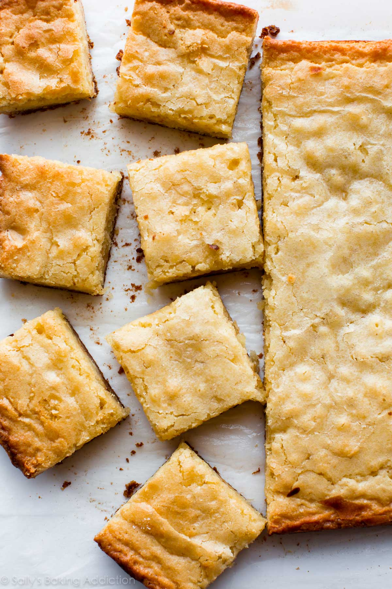

Favourite Recipe
White brownies

| Ingredient |
Amount |
| Butter |
230 g |
| White chocolate |
170 g |
| Eggs |
4 |
| Granulated sugar |
300 g |
| Pure vanilla extract |
2 teaspoons |
| Flour |
188 g |
| Salt |
1/2 tbsp |
Instructions
- Line a 23cm x 33 cm cake tin with parchment paper and heat the oven at 177˚C.
- Melt the butter and white chocolate in a water bath or microwave.
- Whisk the sugars, eggs and vanilla into the foam with an electric mixer. Add the melted white chocolate-butter mixture and mix until smooth. Whisk in the flour and salt, then fold in the white chocolate chips until combined.
- Pour the batter into a tin and bake in a 177 degree oven for 30-32 minutes until the cake feels dry.
- Serve warm or allow to cool in the tin, then lift out of the tin and cut into pieces.